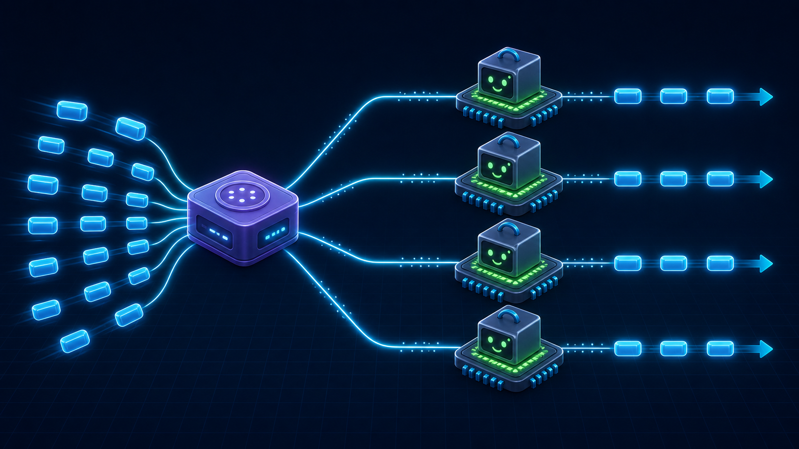

3편 · 37분 — 세상에 공개하기
서비스 운영에 필요한 패키지를 붙이고, pm2 클러스터로 1-4의 싱글 스레드를 회수한다.
cross-env · pm2 · 윈스턴(로깅) · helmet · connect-redispm2 start app.js -i max로 클러스터 모드
$ pm2 start app.js -i max # CPU 코어 수만큼 프로세스
싱글 스레드를 프로세스를 늘려 회수. 명령어 하나면 끝.
EC2를 만들고, 깃으로 코드를 올려 실제로 전 세계에서 접속되게 한다.
git clone (5-1 회수) · 노드 · MySQL 세팅.env 옮기기 · pm2로 실행 · 포트 연결여정을 되짚고, 계속 성장하는 법을 안내한다.
다음 스텝 · 과제 · 강의 노트 N-1~N-8 · 공식 문서와 AI로 계속 성장하기